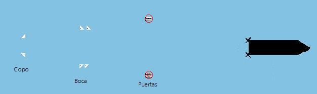

Presentación Cartográfica
La Presentación Cartográfica consiste en la presentación de la línea de costa de todo el mundo, extraída del wvs 1:40.0000, sobre la que se pueden presentar gráficamente elementos fijos como rejilla de meridianos y paralelos, satélites y zonas de cobertura inmarsat, subdivisión de NAVAREAS, dibujos locales, etc., y otras ayudas gráficas como Anillos de Distancia, Líneas de Medición, Puntos de Historia de las Unidades, Punto de Máxima Aproximación, Posición Futura, Interceptación, etc.
Además al instructor se le mostrará sobre la Presentación Cartográfica todas las unidades participantes en el ejercicio, y las zonas meteorológicas. A los alumnos sólo se les mostrará la unidad propia y aquellas otras que tenga en alcance visual.
Las unidades se representarán mediante un icono representativo distinto según su tipo (buque, avión, estación costera o estación fija de otro tipo). El icono incluye una etiqueta con el nombre de la unidad y con su vector velocidad si es estación móvil (buque o avión). Si el zoom es suficientemente cercano, en vez de un icono se representa la silueta del buque.


Cuando un alumno inicia una maniobra de pesca, la red también se representa sobre la pantalla. En el caso de la red de arrastre, aparece el siguiente esquema:

En el palangre y el cerco se muestran las boyas.
Para seleccionar posiciones, la Presentación Cartográfica dispone de dos símbolos gráficos el Hook y la Marca que también podrán ser enganchados a las unidades.

Las funciones para manejar la pantalla de Presentación Cartográfica se ejecutan mediante pulsaciones de los distintos botones del ratón, siempre que el cursor esté situado sobre la carta. Estas funciones son:
Posicionar el Hook. Pulsando el botón izquierdo del ratón, el Hook se sitúa en la posición del cursor.
Posicionar la Marca. Pulsando el botón derecho del ratón, la marca se sitúa en la posición del cursor.
Enganchar el Hook a una Unidad. Para efectuar esta acción, primero se sitúa el cursor sobre el icono de la unidad y seguidamente se pulsa el botón izquierdo del ratón.
Enganchar la Marca a una Unidad. Para efectuar esta acción, primero se sitúa el cursor sobre el icono de la unidad y seguidamente se pulsa el botón derecho del ratón.
Mover una Unidad. Esta acción consiste en pulsar con el botón derecho sobre el icono de la unidad que se desea mover y arrastrar el ratón manteniéndolo pulsado hasta la nueva posición. Esta acción sólo es válida para la consola de instructor.
Mover la Carta. Para efectuar esta acción, primero se sitúa el cursor sobre un punto de la carta en cuya dirección se quiera desplazar y seguidamente se pulsa el botón derecho. Mientras el botón se mantiene pulsado, la carta se desplaza hacia la dirección del cursor. El desplazamiento es más rápido cuanto más se aleja el cursor del centro de la carta.
Realizar Mediciones de Demora y Distancia. Esta acción consiste en pulsar con el botón izquierdo sobre un punto de la carta y arrastrar el ratón, manteniéndolo pulsado, hasta otra posición. Mientras el botón se mantiene pulsado, en la pantalla se dibuja una línea de un punto a otro en cuyo extremo muestra la distancia (en yardas) entre ambos puntos y la demora del segundo respecto al primero.

Ampliar la Carta (zoom+). Girando hacia arriba la rueda central del ratón, se realiza un zoom más x 2, es decir se reduce la escala de presentación de la carta a la mitad de la actual.
Reducir la Carta (zoom-). Girando hacia abajo la rueda central del ratón, se realiza un zoom menos x 2, es decir se amplía la escala de presentación de la carta al doble de la actual.
Seleccionar y Ampliar Área. Esta acción permite realizar un zoom sobre un área de interés de la carta. Para ello se sitúa el cursor en el extremo de la zona que se quiere ampliar, se pulsa la rueda central del ratón y manteniéndola pulsada se arrastra el ratón hasta que el rectángulo que se dibuja sobre la carta cubra toda la zona que se quiere ampliar. Al soltar la rueda, se amplía la zona marcada ajustándose automáticamente la escala.
Todas estas funciones se anulan cuando alguno de los modelos básicos (elementos del escenario) que se dibujan sobre la carta, está en edición y se restablecen cuando se dejan de editar.